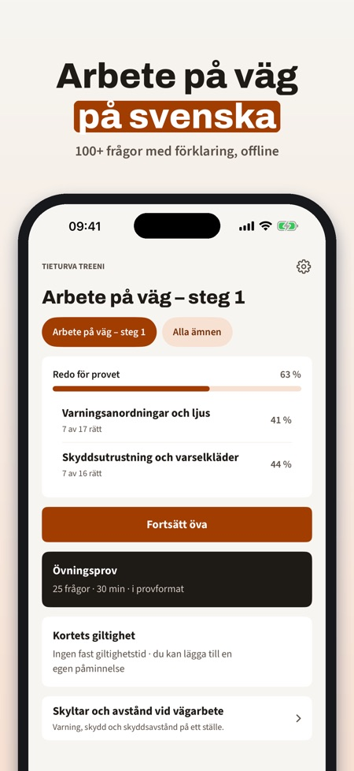
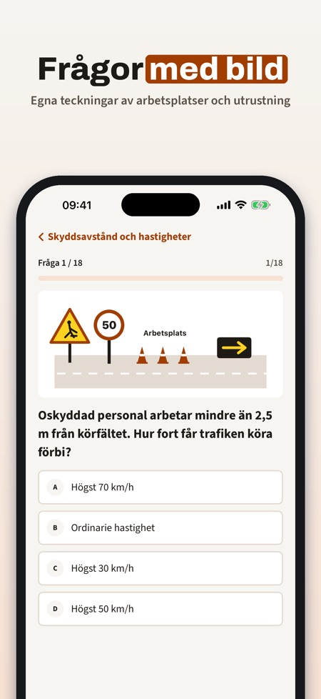
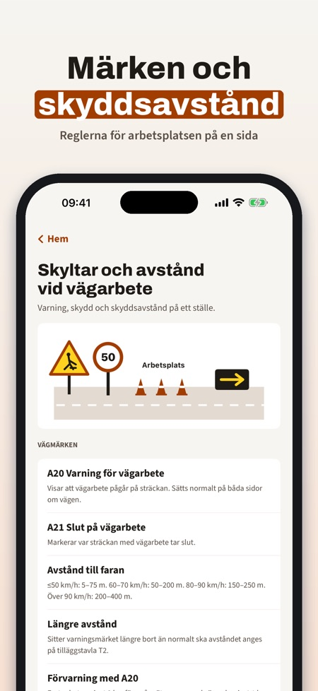

Övningsfrågor för vägarbete. Öva inför Arbete på väg steg 1: frågor med förklaring, övningsprov och regler för utmärkning och skyddsavstånd – på svenska och offline.



Vägklar hjälper dig att öva inför utbildningen Arbete på väg (APV) steg 1 – vägmärken, varningsanordningar och skyddsavstånd med förklaringar.
Utan köp kan du öva 20 frågor och använda ordlistan, sidan om märken och avstånd samt påminnelsen. Fullversionen är ett engångsköp som låser upp alla frågor, övningsprov och repetition av fel. Ingen prenumeration.
Vägklar är fristående och inte kopplad till Trafikverket eller någon utbildare. Utbildningen gör du hos en utbildare.